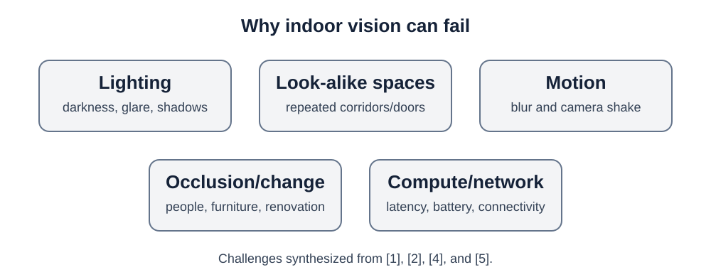

05 · Failure modes
Challenges
Page summary0:00
Indoor vision is powerful because a camera sees rich environmental information, but that same dependence on appearance creates failure modes that a practical system must manage.

Lighting and visual appearance
Dark areas, glare, shadows, or large appearance changes can make image matching harder. Repeated hallways and similar doors can also create perceptual aliasing: different places may look similar. Vision-based reviews identify environmental variability as a central challenge. [1]
Motion and occlusion
A moving phone can produce blur, while people or objects can temporarily hide useful landmarks. A navigation system therefore needs enough reliable visual evidence to avoid confidently matching the wrong place. UNav's technical design uses both global place retrieval and local feature information rather than relying on one visual cue alone. [4]
Map maintenance
Indoor environments change: furniture moves, signs change, corridors are renovated. UNav describes a map-evolution feedback concept in which query images can help update the reference database over time. [4] Marker-based systems face a different maintenance problem: QR nodes must remain installed, visible, correctly mapped, and undamaged. [3]
Computation, battery, and network
Near-real-time navigation needs results quickly enough that instructions remain useful while the person is moving. UNav's localization is typically executed on a remote server, so poor network conditions are a practical concern; the technical paper also discusses local/offline computation as an option. [4] Mobile designs must balance latency, battery use, computation, and accuracy.
Accessibility is more than localization accuracy
A localization error measured in meters does not by itself tell us whether a person can navigate confidently. The 2024 UNav evaluation therefore measured outcomes such as wrong turns, travel time, idling, path efficiency, cane contacts, and help requests. [5] This is an important design lesson: evaluate the whole navigation experience, not just the computer-vision model.